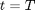

Zero Coupon Bond to Spot Rate
The class returns spot rates from zero coupon bond prices.
Contents
%MATLAB CODE %%%%%%%%%%%%%%%%%%%%%%%%%%%%%%%%%%%%%%%%%%%%%%%%%%%%%%%%%%%%%%%%%%%%%%%%%%% classdef bootstrap_ZCBtoSpot < prursg.Bootstrap.BaseBootstrapAlgorithm
How to Use the Class
Given an input zero coupon bond data series we calculate a spot rate series for a certain compounding frequncy, , with output frequency given by [outputfreq].
Properties
Input Data Series
[ZeroCouponBondPrices] - The price of a zero coupon bond, , at time, , which pays 1 at maturity, .
Data Type: data series
Input Parameters
[outputfreq] - A string that lists the number of monthly, quarterly, semi-annual and annual intervals.
Data Type: string
[compounding] - Defines the way that the output yield curve is compounded, e.g. "annually" or "continuously".
Data Type: string
[compoundingfrequency] - Defines the annual frequency, , at which the output yield curve is compounded e.g. "2" for semi-annually.
Data Type: double
%MATLAB CODE %%%%%%%%%%%%%%%%%%%%%%%%%%%%%%%%%%%%%%%%%%%%%%%%%%%%%%%%%%%%%%%%%%%%%%%%%%% properties % Data Series ZeroCouponBondPrices = []; % Parameters outputfreq = []; compounding = []; compoundingfrequency= []; end %%%%%%%%%%%%%%%%%%%%%%%%%%%%%%%%%%%%%%%%%%%%%%%%%%%%%%%%%%%%%%%%%%%%%%%%%%%
List of Methods
The class introduces one method:
[bootstrap_ZCBtoSpot ()] - Function returns a data series of spot rates calculated using a given compounding frequency to an output frequency profile.
%MATLAB CODE %%%%%%%%%%%%%%%%%%%%%%%%%%%%%%%%%%%%%%%%%%%%%%%%%%%%%%%%%%%%%%%%%%%%%%%%%%% methods
% Constructor function obj = bootstrap_ZCBtoSpot () obj = obj@prursg.Bootstrap.BaseBootstrapAlgorithm(); end %%%%%%%%%%%%%%%%%%%%%%%%%%%%%%%%%%%%%%%%%%%%%%%%%%%%%%%%%%%%%%%%%%%%%%%%%%%
ans =
Bootstrap.bootstrap_ZCBtoSpot handle
Package: Bootstrap
Properties:
ZeroCouponBondPrices: []
outputfreq: []
compounding: []
compoundingfrequency: []
Details of Methods
Description
Function returns a data series of spot rates calculated using a given compounding frequency, [compoundingfrequency], to an output frequency profile given by [outputfreq].
Inputs
[ZeroCouponBondPrices] - The price of a zero coupon bond, , at time, , which pays 1 at maturity, .
Data Type: data series
[outputfreq] - A string that lists the number of monthly, quarterly, semi-annual and annual intervals.
Data Type: string
[compounding] - Defines the way that the output yield curve is compounded, e.g. "annually" or "continuously".
Data Type: string
[compoundingfrequency] - Defines the annual frequency, , at which the output yield curve is compounded e.g. "2" for semi-annually.
Data Type: double
Outputs
A yield curve of spot rates in accordance with the output frequency profile.
Calculations
Sort and clone the input data.
The next step is to identify and set up the output frequency profile which specifies the frequency of outputs e.g. annually or monthly etc.
Depending whether we have continuous or discrete compounding the spot rates are calculate using:
i) Continuous Compounding

where
: Spot Rate at time, , paying at maturity, .
: The price of a zero coupon bond at time, , which pays 1 at maturity, .
or
ii) Annual Compounding
with
: Annual compounding frequency.
%MATLAB Code %%%%%%%%%%%%%%%%%%%%%%%%%%%%%%%%%%%%%%%%%%%%%%%%%%%%%%%%%%%%%%%%%%%%%%%%%%% % Methods function results = Bootstrap(obj, DataSeriesIn) newSortDataSeries=Bootstrap.BsSort(); obj.ZeroCouponBondPrices =newSortDataSeries.SortDataSeries... (DataSeriesIn(1).Clone); maxTerm = obj.ZeroCouponBondPrices(1).axes(1).values{1, end}; BsfrequencyprofileObject =Bootstrap.Bsfrequencyprofile... (obj.outputfreq,maxTerm); outputfreqProfile = ... BsfrequencyprofileObject.AdjustedIntervalArray; ZCBPrices_Temp = ... BsfrequencyprofileObject.SmallerDataSeriesObject... (outputfreqProfile,obj.ZeroCouponBondPrices); results = ZCBPrices_Temp ; for i = 1: size(results.dates,1) Maturity =cell2mat(ZCBPrices_Temp.axes(1).values); BondPrice = results.values{i}; if strcmp(obj.compounding, 'cont') results.values{i} = -log(BondPrice) ./ Maturity; elseif strcmp(obj.compounding, 'ann') results.values{i} = (BondPrice .^(-1./ ... (obj.compoundingfrequency.*Maturity)) -1).*... obj.compoundingfrequency; end end results.Name = ''; results.source ='iMDP'; results.ticker= 'na'; results.description = 'derived ZCBtoSpot method'; results.ratetype = 'spot'; results.compounding =obj.compounding; results.compoundingfrequency= num2str... (obj.compoundingfrequency); results.daycount ='na'; results.units ='absolute'; end
end
end